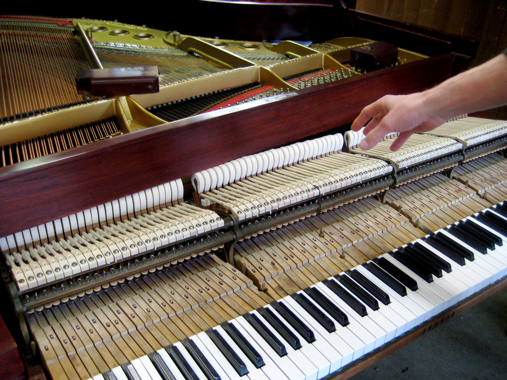
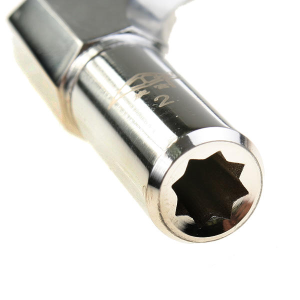

Anatomy of the Piano

The anatomy of the piano is very simple in its basic form. The instrument, while large, consists of some pretty large aspects that are intigral in the function of music-making.
Some of the main parts of the piano include:
- Cabinet
- Action
- Soundboard
- Cast Iron Plate
- Strings
- Hammers
The way in which the piano is pieced together is overall pretty complicated, but can be summed up with a few points. Firstly, the action holds the responsibility for housing the keyboard in which the hands play on. This very complicated mechanism holds the most integral parts that are involved with the hammers (which are activated by the keys from the keyboard), striking the strings. Holding down the sustain pedal will raise the mutes from the strings, allowing the strings to vibrate as long as you'd like!
Tuning the Piano

When we tune a piano, we use a special tool called a tuning hammer. The picture to the left shows how the end of the tool locks into the tuning pins, and turns them to adjust the pitch of the string. This works very much like tuning a guitar. A peg is turned to stretch or loosen a string to properly tune it to the correct pitch.